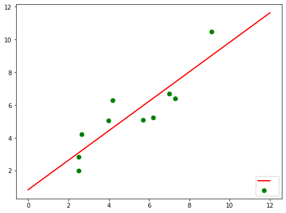

ICSOS paper (not updated)#
import numpy as np
import scipy as sp
import pandas as pd
from copy import deepcopy
from pyproj import Proj, Geod
import matplotlib.pyplot as plt
from scipy.optimize import leastsq
definition functions for the parameters calculate#
# parameter equation for u
def para_u(p_u,u):
pu0,pu1,pu2,pu3,pu4,pu5,pu6,pu7 = p_u
du = pu0*u[0] + pu1*u[1]+ pu2*u[2] + pu3*u[3] + pu4*u[4] + pu5*u[5] + pu6*u[6] + pu7*u[7]
return du
def error_u(p_u, u, du):
return para_u(p_u,x) - du
# parameter equation for v
def para_v(p_v,v):
pv0,pv1,pv2,pv3,pv4,pv5,pv6,pv7,pv8,pv9,pv10,pv11,pv12,pv13 = p_v
dv = pv0*v[0] + pv1*v[1] + pv2*v[2] + pv3*v[3] + pv4*v[4] + pv5*v[5] + pv6*v[6] + pv7*v[7] + pv8*v[8] + pv9*v[9] + pv10*v[10] + pv11*v[11] + pv12*v[12] + pv13*v[13]
return dv
def error_v(p_v, v, dv):
return para_v(p_v,x) - dv
# parameter equation for r
def para_r(p_r,r):
pr0,pr1,pr2,pr3,pr4,pr5,pr6,pr7,pr8,pr9,pr10,pr11,pr12,pr13 = p_r
dr = pr0*r[0] + pr1*r[1] + pr2*r[2] + pr3*r[3] + pr4*r[4] + pr5*r[5] + pr6*r[6] + pr7*r[7] + pr8*r[8] + pr9*r[9] + pr10*r[10] + pr11*r[11] + pr12*r[12] + pr13*r[13]
return dr
def error_r(p_r, r, dr):
return para_r(p_r,x) - dr
load zigzag data and pretreatment#
# data = pd.read_csv("./model_data/trunning_30_inter.csv")
data = pd.read_csv("./model_data/zigzag_30_inter.csv")
data.speed = data.speed / 1.852
service_speed = round(data.speed.mean(), 3)
# no course data, use the diff heading instead
d_heading = data.heading.diff().fillna(0)
data.loc[:,"dcourse"] = d_heading
# calculate the rudder angle and heading
data.loc[:,"rudder"] = np.deg2rad(data.rudder-40)
data.loc[:,"heading"] = np.deg2rad(data.heading)
# calculate the u, v and r
data.loc[:,"u"] = np.cos(np.deg2rad(d_heading)) * data.speed - service_speed
data.loc[:,"v"] = np.sin(np.deg2rad(d_heading)) * data.speed
data.loc[:,"r"] = data.heading.diff().fillna(0)
# trans longitude and latitude to x y (m)
trans_cor = Proj(proj='utm', zone=10, ellps='WGS84', preserve_units=False)
x,y = trans_cor(data.lon.values, data.lat.values)
dx = x - x[0]
dy = y - y[0]
data.loc[:,"x"] = dx
data.loc[:,"y"] = dy
# data.loc[:,"du"] = data.u.diff().fillna(0)
# data.loc[:,"dv"] = data.v.diff().fillna(0)
# data.loc[:,"dr"] = data.r.diff().fillna(0)
# rudder?
# data.loc[:,"drudder"] = data.ruddera.diff().fillna(0)
Abkoitz model test#
# 加速度带入计算 求得加速度
# 再在时间上积分
# du, dv, dr,de(rudder)
### raw 60 paramerters
### simplify to 36 parameters (8+14+14)
### kt models
# ship = [x, y, u, v, r, e, heading]
def Abkoitz_36Param(data):
"""
Abkoitz with 36 parameters(u: 8, v:14, r: 14)
input: dataframe with the u,v,r,drudder (speed in m/s, angle in radian)
output: paramerers for u, v, r
"""
# get the u / v / r data from the dataframe
u = data.u.values
v = data.v.values
r = data.r.values
rudder = data.rudder.values
# drudder = data.drudder.values
# calculate the input( du / dv / dr )
du = [u, v**2, r**2, rudder**2, v*r, v*rudder, r*rudder, 1]
dv = [v, r, rudder, abs(v)*v, abs(v)*r, abs(r)*r, abs(r)*v,\
rudder**3, v**2*rudder, v*rudder**2, r*rudder**2, r**2*rudder, r*u*rudder,1]
dr = [v, r, rudder, abs(v)*v, abs(v)*r, abs(r)*r, abs(r)*v,\
rudder**3, v**2*rudder, v*rudder**2, r*rudder**2, r**2*rudder, r*u*rudder,1]
# defini the min error
ue = np.zeros(8)
ve = np.zeros(14)
re = np.zeros(14)
# calculate the output( dot_u / dot_v / dot_r)
h = 0.1
dot_u = data.u.diff().fillna(0)/h
dot_v = data.v.diff().fillna(0)/h
dot_r = data.r.diff().fillna(0)/h
# latest square method calculate the parameters
parau = leastsq(error_u,ue,args=(u,dot_u))
parav = leastsq(error_v,ve,args=(v,dot_v))
parar = leastsq(error_r,re,args=(r,dot_r))
Param = dict(Pu=parau[0], Pv=parav[0], Pr=parar[0])
return Param
dship = np.zeros((8))
Pu = Param['Pu']
Pv = Param['Pv']
Pr = Param['Pr']
# x
dship[0] = (ship[2] + service_speed)*np.cos(ship[4]) - (ship[3]*np.sin(ship[4]))
# y
dship[1] = (ship[2] + service_speed)*np.sin(ship[4]) + (ship[3]*np.cos(ship[4]))
# du
dship[2] = Pu[0]*ship[2] + Pu[1]*ship[3]**2 + Pu[2]*ship[4]**2 + Pu[3]*ship[5]**2 \
+ Pu[4]*ship[3]*ship[4] + Pu[5]*ship[3]*ship[5] + Pu[6]*ship[4]*ship[5] + Pu[7]
# dv
dship[3] = Pv[0]*ship[3] + Pv[1]*ship[4] + Pv[2]*ship[5] + Pv[3]*abs(ship[3])*ship[3] \
+ Pv[4]*abs(ship[3])*ship[4] + Pv[5]*abs(ship[4])*ship[4] + Pv[6]*abs(ship[3])*ship[4] \
+ Pv[7]*(ship[5])**3 + Pv[8]*ship[3]**2*ship[5] + Pv[9]*ship[3]*ship[5]**2 \
+ Pv[10]*ship[4]*ship[5]**2 + Pv[11]*ship[4]**2*ship[5] + Pv[12]*ship[2]*ship[4]*ship[5] + Pv[13]
# dr
dship[4] = Pr[0]*ship[3] + Pr[1]*ship[4] + Pr[2]*ship[5] + Pr[3]*abs(ship[3])*ship[3] \
+ Pr[4]*abs(ship[3])*ship[4] + Pr[5]*abs(ship[4])*ship[4] + Pr[6]*abs(ship[3])*ship[4] \
+ Pr[7]*(ship[5])**3 + Pr[8]*ship[3]**2*ship[5] + Pr[9]*ship[3]*ship[5]**2 \
+ Pr[10]*ship[4]*ship[5]**2 + Pr[11]*ship[4]**2*ship[5] + Pr[12]*ship[2]*ship[4]*ship[5] + Pr[13]
# de
dship[5] = ship[7]
# ship = [x, y, u, v, r, e, heading]
def Abkowitz_36model(Param, ship):
"""
Param: dict, include the parameters for the Pu, Pv and Pr
ship: list, include the ship's x, y, u, v, r, e, heading data
"""
shipx, shipy, shipu, shipv, shipr, shipe ,shiph= ship
# ship = [x, y, u, v, r, e, heading]
dship = np.zeros((7))
Pu = Param['Pu']
Pv = Param['Pv']
Pr = Param['Pr']
# x
dship[0] = (shipu + service_speed)*np.cos(shiph) - (shipv*np.sin(shiph))
# y
dship[1] = (shipu + service_speed)*np.sin(shiph) + (shipv*np.cos(shiph))
# du
dship[2] = Pu[0]*shipu + Pu[1]*shipv**2 + Pu[2]*shipr**2 + Pu[3]*shipe**2 \
+ Pu[4]*shipv*shipr + Pu[5]*shipv*shipe + Pu[6]*shipr*shipe + Pu[7]
# dv
dship[3] = Pv[0]*shipv + Pv[1]*shipr + Pv[2]*shipe + Pv[3]*abs(shipv)*shipv \
+ Pv[4]*abs(shipv)*shipr + Pv[5]*abs(shipr)*shipr + Pv[6]*abs(shipr)*shipv \
+ Pv[7]*(shipe)**3 + Pv[8]*shipv**2*shipe + Pv[9]*shipv*shipe**2 \
+ Pv[10]*shipr*shipe**2 + Pv[11]*shipr**2*shipe + Pv[12]*shipr*shipv*shipe + Pv[13]
# dr
dship[4] = Pr[0]*ship[3] + Pr[1]*ship[4] + Pr[2]*ship[5] + Pr[3]*abs(ship[3])*ship[3] \
+ Pr[4]*abs(ship[3])*ship[4] + Pr[5]*abs(ship[4])*ship[4] + Pr[6]*abs(ship[3])*ship[4] \
+ Pr[7]*(ship[5])**3 + Pr[8]*ship[3]**2*ship[5] + Pr[9]*ship[3]*ship[5]**2 \
+ Pr[10]*ship[4]*ship[5]**2 + Pr[11]*ship[4]**2*ship[5] + Pr[12]*ship[2]*ship[4] + Pr[13]
# dheading
dship[6] = shipr
return dship
def euler2(xdot, x, delta_t):
return (x + xdot*delta_t)
Param = Abkoitz_36Param(data)
dt = .1
predict = []
ship = data[["x","y","u","v","r","rudder","heading"]].loc[0].values
predict.append(ship)
for i in range(len(data)):
rudder = data.rudder[i]
# rpm = choose.rpm[i]
# ship[5] = rpm
ship[6] = rudder
dx = Abkowitz_36model(Param, ship)
ship = deepcopy(euler2(dx, deepcopy(ship), dt))
predict.append(ship)
predict = pd.DataFrame(predict,columns=["x","y","u","v","r","rudder","heading"])
predict
| x | y | u | v | r | rudder | heading | |
|---|---|---|---|---|---|---|---|
| 0 | 0.000000 | 0.000000 | 0.003978 | 0.000000e+00 | 0.000000e+00 | 0.531089 | 0.531089 |
| 1 | 0.054838 | 0.032211 | 0.003978 | -1.221162e-08 | 1.332594e-08 | 0.531089 | 0.532008 |
| 2 | 0.109646 | 0.064472 | 0.003978 | -2.442325e-08 | 2.665188e-08 | 0.531089 | 0.532831 |
| 3 | 0.164427 | 0.096778 | 0.003978 | -3.663487e-08 | 3.997782e-08 | 0.531089 | 0.533652 |
| 4 | 0.219182 | 0.129129 | 0.003978 | -4.884650e-08 | 5.330376e-08 | 0.531089 | 0.534458 |
| ... | ... | ... | ... | ... | ... | ... | ... |
| 2092 | 116.214405 | 1.948242 | 0.003995 | -2.554642e-05 | 2.787780e-05 | 0.531089 | 0.498714 |
| 2093 | 116.270260 | 1.978659 | 0.003995 | -2.555863e-05 | 2.789112e-05 | 0.531089 | 0.498714 |
| 2094 | 116.326114 | 2.009076 | 0.003995 | -2.557085e-05 | 2.790445e-05 | 0.531089 | 0.498714 |
| 2095 | 116.381968 | 2.039493 | 0.003995 | -2.558306e-05 | 2.791777e-05 | 0.531089 | 0.498714 |
| 2096 | 116.437822 | 2.069910 | 0.003995 | -2.559527e-05 | 2.793110e-05 | 0.531089 | 0.498716 |
2097 rows × 7 columns
plt.plot(predict.x, predict.y, "r.")
plt.plot(data.x,data.y, "b.")
[<matplotlib.lines.Line2D at 0x7fea30ba4b20>]
plt.plot(xx1.heading, "b.")
plt.plot(data.heading, "r.")
plt.plot(data.rudder, "k.")
[<matplotlib.lines.Line2D at 0x7fe9d01b0280>]
plt.plot(xx1.x, xx1.y, "b.")
plt.plot(data.x, data.y, "r.")
[<matplotlib.lines.Line2D at 0x7fea035aaac0>]
latest square fucntion test#
Xi=np.array([6.19,2.51,7.29,7.01,5.7,2.66,3.98,2.5,9.1,4.2])
Yi=np.array([5.25,2.83,6.41,6.71,5.1,4.23,5.05,1.98,10.5,6.3])
# 拟合函数
def func(p,x):
k,b=p
return k*x+b
# 误差函数
def error(p,x,y):
return func(p,x)-y
p0=[1,20]
Para = leastsq(error,p0,args=(Xi,Yi))
k,b=Para[0]
print("k=",k,"b=",b)
print("cost："+str(Para[1]))
print("y="+str(round(k,2))+"x+"+str(round(b,2)))
k= 0.9004584204388926 b= 0.831055638876812
cost：1
y=0.9x+0.83
plt.figure(figsize=(8,6)) ##指定图像比例： 8：6
plt.scatter(Xi,Yi,color="green",label=" ",linewidth=2)
#画拟合直线
x=np.linspace(0,12,100) ##在0-15直接画100个连续点
y=k*x+b ##函数式
plt.plot(x,y,color="red",label=" ",linewidth=2)
plt.legend(loc='lower right') #绘制图例
plt.show()
